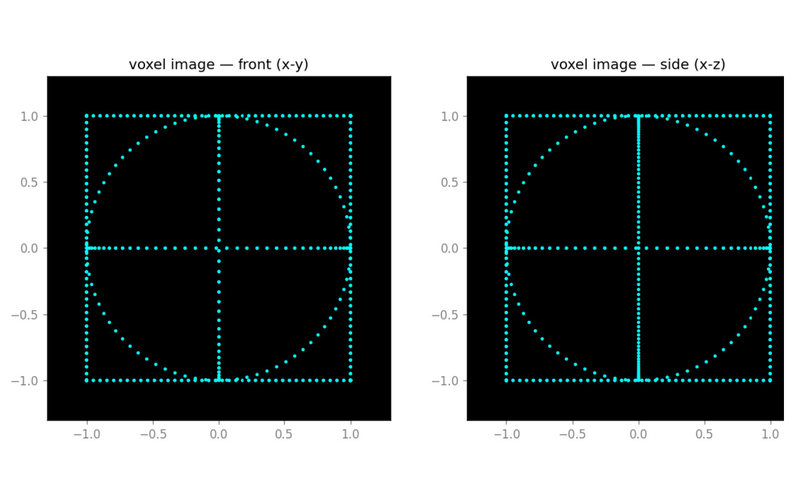
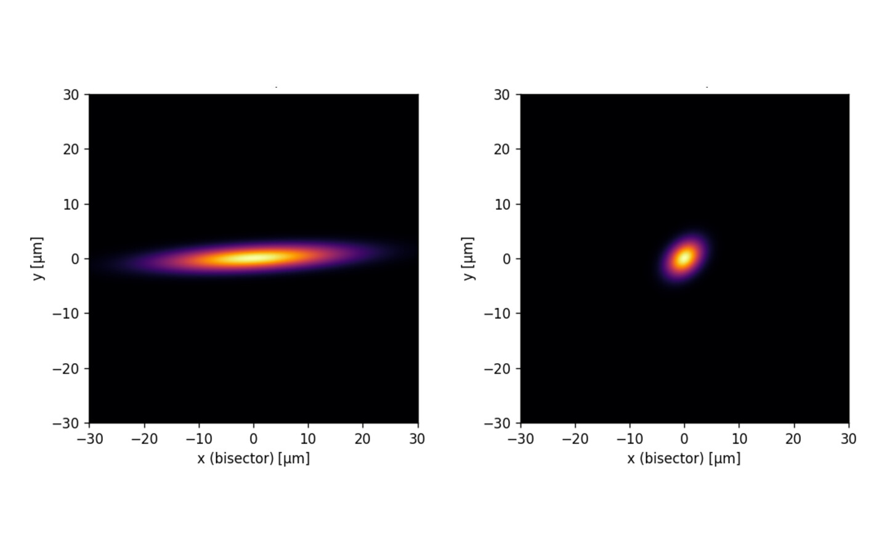
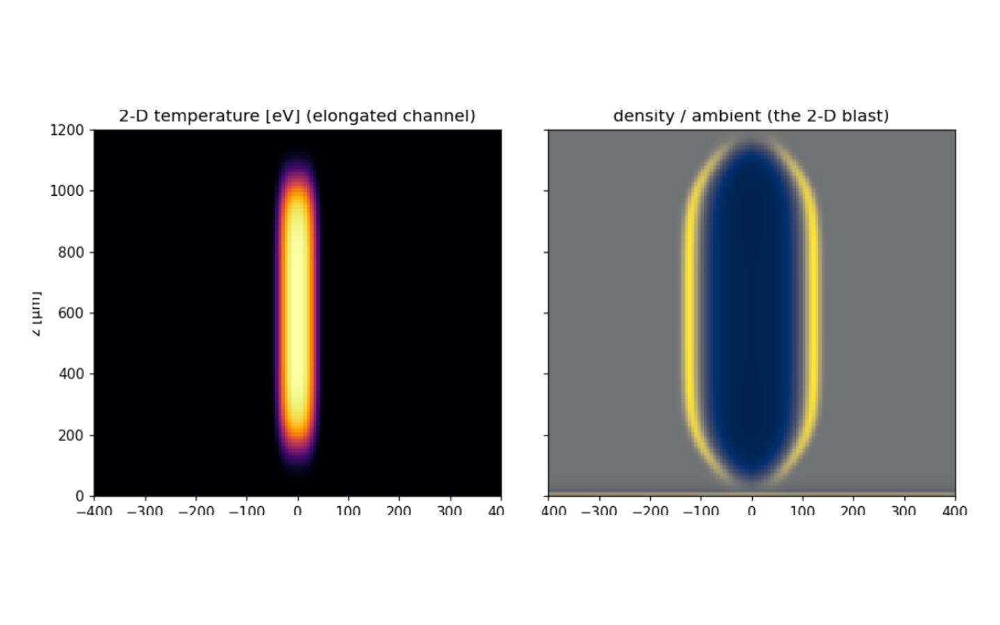

A 49-page design study for a glowing image that floats in open air - its physics, optics, control loops and bill of materials - computed end to end by a stack of open-source physics simulators driven by an AI agent. No optical bench. No laser ever switched on.



Real output from the simulations - not renders. Left to right: a computed wireframe frame, the crossing-beam localization collapsing to a point, and the 2-D rad-hydro of a single spark.
Coding got automated first because you can run the test - the verifier was already there. So the real question is which other fields are already past that gate. Physics is one of them, and almost nobody had built the harness to exploit it.
The constants are measured. The cross-sections are tabulated in HITRAN, LXCat and NIST. Most regimes have a closed-form limit you can check a number against. That isn't a benchmark someone still has to build - it's two centuries of physics, sitting in the open, ready to grade an answer.
Physics has always had the verifiability. What it lacked was an agent that could call the tools and check its own work against that record.
A dozen open-source physics simulators, each in its own container, each wrapped so a single agent can call all of them. The loop proposes a configuration, runs the container, reads the resulting figure back, checks it against the literature, and decides what to run next.
Then we pointed it at one hard, cross-disciplinary question - can you draw a glowing image in mid-air? - to see how far it would get.
The physics is the subject. The deliverable is the method: a verifiable, reproducible agentic system that spans a dozen tools which barely share a vocabulary, let alone a data format. This is the part that transfers to any domain with an answer key.
No scientific dependency ever touches the host. Quantum chemistry in one container, particle-in-cell plasma codes in another, line-by-line radiative transfer in a third, custom radiation-hydrodynamics in a fourth - each with its own pinned toolchain.
Each simulator is wrapped as an MCP server, so the same agent calls all of them regardless of the language or runtime inside. A dozen incompatible codes become one uniform set of tools.
A planner proposes the next configuration, a coder writes the simulator input deck, a runner executes the container, an analyst loads results and plots them, and a critic checks units, convergence and physical plausibility before anything is trusted.
Every quantity is unit-typed, so an energy can't be silently misread three containers downstream. Results serialize to typed datasets that become the explicit input to the next stage - every cross-regime hand-off auditable rather than assumed.
Every run is tracked and keyed by configuration hash and container pin, so any figure in the 49 pages traces back to the exact parameters and code version that produced it. Reproducible by construction.
The main loop runs on Claude Code. The repository also ships a fully local variant - the same planner, tools and analyst driven by a model on the workstation, no API key - to prove the architecture doesn't depend on any one provider.
Generated plots aren't treated as finished artifacts - they're inspected as part of analysis. Several discrepancies between what was expected and what the physics actually produced were caught by looking at a light curve and thinking that shape is wrong. The agent writes the input deck, runs the container and reads the plot; the human's job becomes choosing which question is worth asking next, and refusing any answer that hasn't been checked against something real.
Focus a laser hard enough and it rips electrons off the air at the focal point - a microscopic spark, a pixel with a real address in space. Move ten thousand of them sixty times a second and the eye sees a picture. Here is what the physics says about building one.
A single beam strong enough to ionize air is strong enough to hurt an eye anywhere along its path. So the design crosses two beams, each individually too weak to spark anything - only their intersection lights up. Air breakdown scales as intensity to the eleventh power, so the crossing point ignites about 1023 times faster than anywhere along either beam. That isn't a preference; it's a switch that pins the glowing dot to one point in space.
A dark-adapted eye needs about 100 photons at the cornea. The computed voxel delivers around 184 - a conservative margin. And brightness climbs with plasma temperature at almost fixed energy: hotter plasma, not more power, is the cheap knob.
A prototype priced from real vendor catalogues comes to ~$378,000, more than half of it one femtosecond laser. But the physics only needs ~50 nJ per flash at sub-watt average power - a compact fibre source at $15k-$60k, not an industrial amplifier.
Tuning the two colours onto real quantum energy levels in oxygen and nitrogen is what buys the 18× efficiency. The recipe wasn't guessed - it came out of the quantum-chemistry calculation, dark channels and all.
The image is lit-up air - you can pass your hand through it. The ozone and nitrogen oxides a spark produces stay well inside health limits with modest ventilation. The delivery beams are still Class-4 and need boxing - a known engineering job.
At ~104 voxels the display draws line-and-point art - cubes, text, outlines - and the bottleneck is the scanner, not the voxel. A solid volume would need a hundred times the addressing rate. The sparse look is a consequence of the physics, not a style choice.
At one point a radiation-hydrodynamics run reproduced a real air-spark's light curve beautifully - exactly the figure you build a section around. It was wrong.
The solver wasn't conserving energy. Rebuilt properly, a spurious amplification factor collapsed from 1407× to 1.4×, and the beautiful agreement collapsed with it. The real glow had to be reassigned to entirely different physics.
The conclusion was withdrawn rather than defended. It sits in the paper described as what it was.
There's a tempting shortcut - skip the plasma, use cheap laser pointers, let dust scatter the light into a point. It was computed, and it cannot work: scattering is linear, so the beam glows along its whole path instead of at a point.
That failure is informative - it's exactly why the nonlinear plasma approach is the right one. Better to publish the dead end than quietly omit it.
A simulation campaign that never retracts anything isn't careful - it's unfalsifiable.
The whole point isn't the hologram. It's that a Tech Lead who is not a plasma physicist built a system that produced a rigorous, cross-checked physics study - because the verifier carried the domain knowledge, not the builder.
That's the same discipline we bring to client work: generation is cheap, so the leverage lives in the scaffolding around it - the data contract, the provenance, the vendor independence, and a verifier that measures the thing you actually care about. Across everything we build, the moat is the verifier, not the generator. This is that thesis proven in the hardest possible place.
The full manuscript, the LaTeX source, the simulation station and every container definition are public - code under the MIT license, paper and figures under CC BY 4.0. Every quantitative result is cross-checked against published literature or an analytic limit, with its uncertainty stated inline. Where a closed form exists, the computed number is checked against it: a nitrogen polarizability within 1.7% of reference, a breakdown field that recovers the textbook value, a maser threshold matched to machine precision. You don't have to take any of it on trust.
If your domain has measurements to check against - a simulator, a spec, a ground truth - it can be put behind a verifying agent loop. That's what we build. Read the study first, then let's talk about yours.